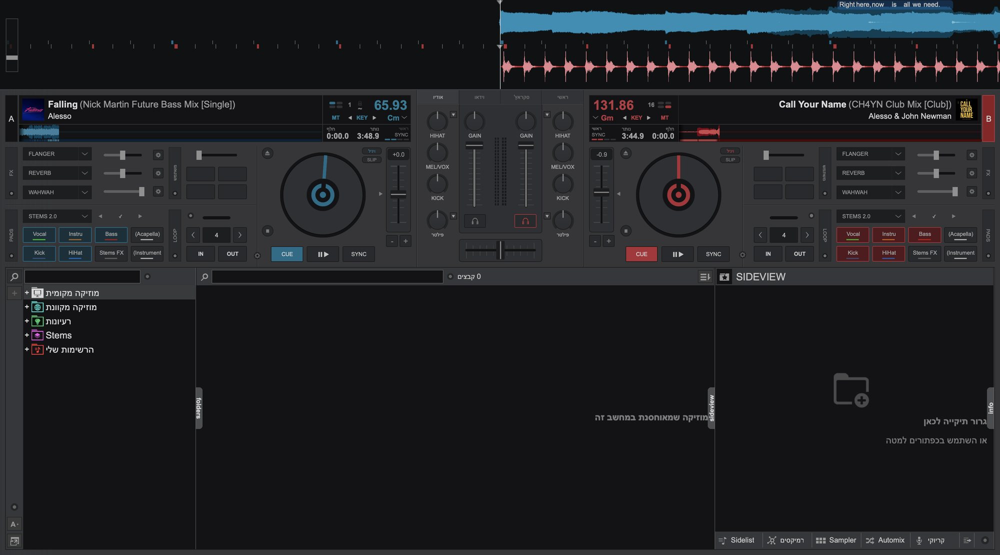

DJ (דיג'יי) הוא האדם שמנגן מוזיקה מוקלטת לקהל, ובעיקר מחבר בין שירים כך שהרחבה לא מתרוקנת. במקום עצירה ושקט בין שיר לשיר, ה-DJ מכין את השיר הבא, מתאים אותו לקצב של השיר הנוכחי, ומעביר אליו בצורה חלקה. לזה קוראים מיקס.
VirtualDJ היא תוכנה שמחקה ציוד DJ אמיתי: יש בה שני "פטיפונים" וירטואליים שנקראים Deck (דק), מיקסר עם פיידרים ו-EQ, וספרייה שבה נמצאים השירים שלך. אפשר לעבוד עם עכבר ומקלדת בלבד, ובהמשך לחבר פלטה (Controller) אם תרצה.
מה DJ עושה בפועל?
- בוחר שירים שמתאימים לקהל ולרגע.
- מתאים קצב (BPM) בין שני שירים.
- מעביר משיר לשיר בעזרת פיידרים, EQ ואפקטים.
- קורא את הקהל ומשנה כיוון כשצריך.
החדשות הטובות: את רוב העבודה הטכנית התוכנה יודעת לעזור לך לעשות. מה שבאמת הופך אותך ל-DJ טוב הוא האוזן והבחירה, וזה בא עם תרגול. בקורס הזה נלך צעד אחר צעד, ובכל שיעור יש תרגיל קצר ובוחן לבדיקה עצמית.
💡 טיפ: אל תנסה ללמוד הכול ביום אחד. 20 דקות תרגול ביום שוות יותר מ-3 שעות פעם בשבוע.